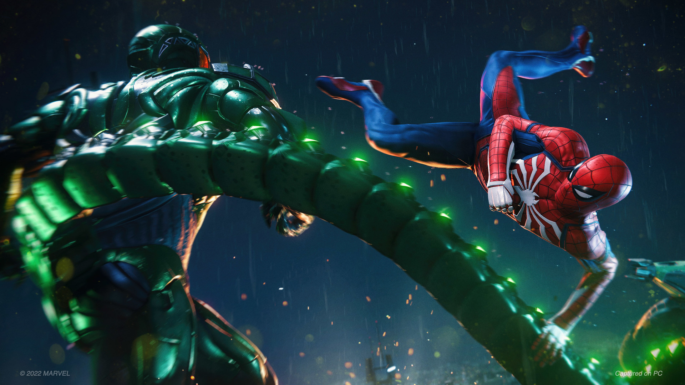

Estos normalmente son hechos para "Singleplayer" osea para solo 1 jugador, Una de las cosas que más me llama la atención de este género es la posibilidad de explorar diferentes mundos y descubrir nuevas zonas mientras se desarrolla la historia. Algunos juegos utilizan mundos completamente abiertos, mientras que otros presentan escenarios más lineales. También es un género que suele combinarse con RPG, supervivencia o incluso Shooter, por lo que existen muchas experiencias diferentes dentro de la misma categoría.
| Nombre | Gameplay |
| Batman: Arkham Origins | |
| Marvel's Spiderman |  |